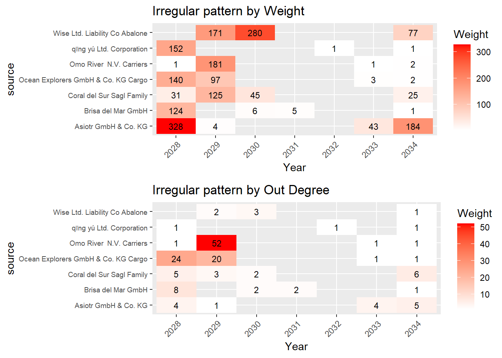

Show the code
pacman::p_load(jsonlite, tidygraph, ggraph, visNetwork, lubridate, tidyverse, visNetwork,heatmaply,dply,ggpubr)Yen Yun Hsuan
May 28, 2023
This is Mini-Challenge 2 of VAST Challenge 2023.
The country of Oceanus has sought FishEye International’s help in identifying companies possibly engaged in illegal, unreported, and unregulated (IUU) fishing.
To facilitate their analysis, FishEye transformed the trade data into a knowledge graph. Using this knowledge graph, they hope to understand business relationships, including finding links that will help them stop IUU fishing and protect marine species that are affected by it. They are now looking for visualizations that provide more detail about patterns for entities in the knowledge graph.
FishEye knows from past experience that companies caught fishing illegally will shut down but will then often start up again under a different name. FishEye wants your help to use visual analytics to identify temporal patterns for individual entities and between entities in the knowledge graph FishEye created from trade records. Categorize the types of business relationship patterns you find. Limit your response to 600 words and 6 images.
At the root-level, MC2 is a dictionary with graph-level properties specified as keys.
Below extract data frame from MC2 list as tibble table.
There are many NA values in shpcountry and rcvcountry columns, and it is hard to fill in those NA values, so exclude these two columns.
Use select to reorder column sequences, with id column in the first.
Examine the missing values and features format in Edge data.
Use select to drop three “value-” columns with lots of NA, and drop “dataset” which is no need.
The arrivaldate is treated as “Character” data type instead of date data type. Need to change the data type back to “Date”” data type.
Create a column Year as factor format since Date is too detailed for analysis
arrivaldate hscode valueofgoods_omu volumeteu
0 0 5464097 520933
weightkg dataset source target
0 0 0 0
valueofgoodsusd
3017844 Rows: 5,464,378
Columns: 9
$ arrivaldate <chr> "2034-02-12", "2034-03-13", "2028-02-07", "2028-02-23…
$ hscode <chr> "630630", "630630", "470710", "470710", "470710", "47…
$ valueofgoods_omu <dbl> 141015, 141015, NA, NA, NA, NA, NA, NA, NA, NA, NA, N…
$ volumeteu <dbl> 0, 0, 0, 0, 0, 0, 0, 0, 0, 0, 0, 0, 0, 0, 0, 0, 0, 0,…
$ weightkg <int> 4780, 6125, 10855, 11250, 11165, 11290, 9000, 19490, …
$ dataset <chr> "MC2", "MC2", "MC2", "MC2", "MC2", "MC2", "MC2", "MC2…
$ source <chr> "AquaDelight Inc and Son's", "AquaDelight Inc and Son…
$ target <chr> "BaringoAmerica Marine Ges.m.b.H.", "BaringoAmerica M…
$ valueofgoodsusd <dbl> NA, NA, NA, NA, NA, NA, 87110, 188140, NA, 221110, 58…The organized data frame of edge is as below:
Rows: 5,190,407
Columns: 6
$ source <chr> "AquaDelight Inc and Son's", "AquaDelight Inc and Son's",…
$ target <chr> "BaringoAmerica Marine Ges.m.b.H.", "BaringoAmerica Marin…
$ arrival_date <date> 2034-02-12, 2034-03-13, 2028-02-07, 2028-02-23, 2028-09-…
$ Year <fct> 2034, 2034, 2028, 2028, 2028, 2028, 2028, 2028, 2028, 202…
$ hscode <chr> "630630", "630630", "470710", "470710", "470710", "470710…
$ weightkg <int> 4780, 6125, 10855, 11250, 11165, 11290, 9000, 19490, 6865…| Col name | Description |
|---|---|
| arrival_date/Year | Date/Year the shipment arrived at port |
| hscode | Harmonized System code (commodity code) for the shipment |
| weightkg | The weight of the shipment in kilograms |
| Source/ target | Some shipper(source) and receiver names/countries(target) was anonymized, so some are represented by numerical names. |
The edges include records from 2028 to 2034, filter companies with higher numbers of shipment (here is weight > 100) in the first two years 2028 and 2029.
Then by following these steps, we can identify companies with high shipment records in the specified years and evaluate whether there are any anomalies in their temporal patterns.
Calculate the distinct number of years for each company.
Determine the maximum and minimum year for each company to calculate the number of periods.
Filter the companies that have missing records in several years.
MC2_edge_high <- MC2_edges %>%
filter(Year %in% c(2028, 2029)) %>%
group_by(source,Year) %>%
summarise(weight = n(),.groups = "drop") %>%
filter(weight > 100)
MC2_edge_abnormal <- MC2_edges%>%
filter(source %in% MC2_edge_high$source) %>%
group_by(source) %>%
mutate(distinct_year = n_distinct(Year)) %>%
mutate(Year = as.numeric(as.character(Year))) %>%
group_by(source,distinct_year) %>%
summarize(max_year = max(Year), min_year = min(Year),.groups = "drop") %>%
mutate(period = max_year-min_year+1) %>%
filter(period >1) %>%
filter(period - distinct_year>2 )
glimpse(MC2_edge_abnormal)Rows: 7
Columns: 5
$ source <chr> "Asiotr GmbH & Co. KG", "Brisa del Mar GmbH", "Coral del…
$ distinct_year <int> 4, 4, 4, 4, 4, 3, 3
$ max_year <dbl> 2034, 2034, 2034, 2034, 2034, 2034, 2034
$ min_year <dbl> 2028, 2028, 2028, 2028, 2028, 2029, 2028
$ period <dbl> 7, 7, 7, 7, 7, 6, 7Filter only the sources that were identified as abnormal in the previous step, and calculate the Weight and out-degree of each company by year.
# heatmap for weight
MC2_node_abnor <- MC2_edges %>%
filter(source %in% MC2_edge_abnormal$source) %>%
group_by(source,Year) %>%
summarise(Weight = n(), .groups = "drop")
g1 <- ggplot(MC2_node_abnor, aes(Year,source)) +
geom_tile(aes(fill = Weight)) +
geom_text(aes(label = Weight),size = 3) +
labs(title = "Irregular pattern by Weight")+
scale_fill_gradient(low = "white", high = "red")+
# adjust angle to be 45 to avoid overlapping
theme(axis.text.x = element_text(angle = 45, hjust = 1))+
theme(axis.text.y = element_text(size = 7))
# heatmap for out-degree connections
MC2_node_abno <- MC2_edges %>%
filter(source %in% MC2_edge_abnormal$source) %>%
group_by(source, target,Year) %>%
summarize(.groups = "drop") %>%
group_by(source,Year) %>%
summarize(Weight = n(), .groups = "drop")
g2 <- ggplot(MC2_node_abno, aes(Year,source)) +
geom_tile(aes(fill = Weight)) +
geom_text(aes(label = Weight),size = 3) +
scale_fill_gradient(low = "white", high = "red")+
# adjust angle to be 45 to avoid overlapping
theme(axis.text.x = element_text(angle = 45, hjust = 1))+
theme(axis.text.y = element_text(size = 7))+
labs(title = "Irregular pattern by Out Degree")
ggarrange(g1, g2, nrow = 2)
We can observe these companies experienced a peak in the weight of shipments during the years 2028 and 2029. However, there is a substantial gap in their shipment records for several years, and shipments resumed with a significantly lower number of shipments per year.
Furthermore, when examining the number of companies these companies ship out to, it becomes evident that both Omo River and Ocean Explorers have experienced a significant drop in the number of outbound connections to other companies. On the other hand, the remaining companies generally have less than five outbound connections each.